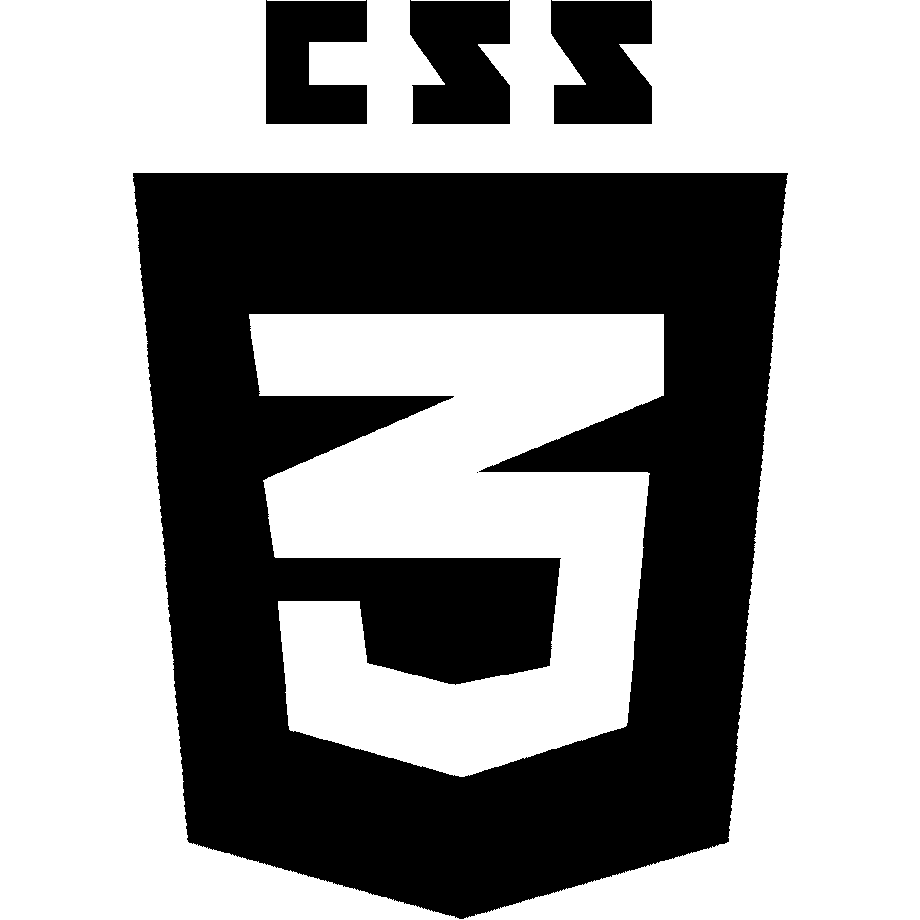
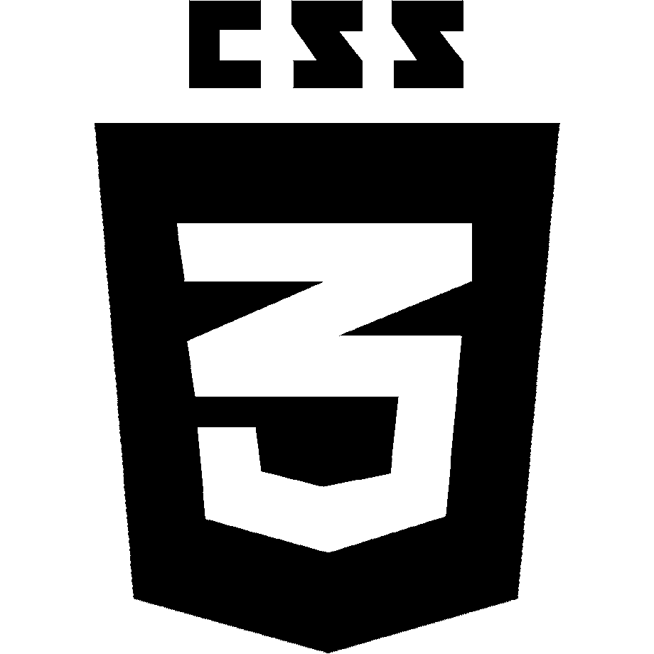
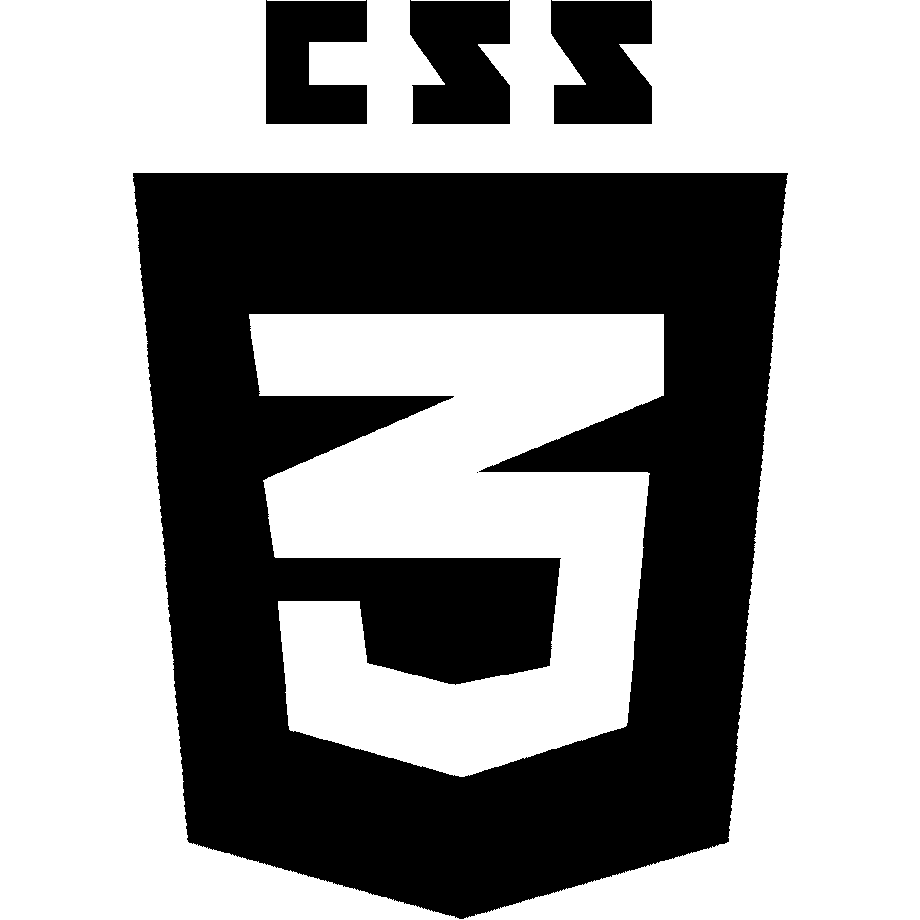

Skills
 


Este projeto foi feito a partir de um template desenvolvido pelo designer do cliente. O layout criado em Adobe Illustrator foi convertido para um tema Wordpress.
Acessar siteAdaptação do tema Celebrate para o Wordpress Multisite do Mundo Louco de Ozi Studio. Este projeto foi construído para unificar diversos sites do cartunista em uma única instalação Wordpress. Para este processo foram feitas diversas transposições de bancos de dados.
Acessar siteEste projeto consiste em desenvolver e aprimorar o software livre desenvolvido para gerenciamento de bibliotecas, arquivos e museus.
Acessar site
